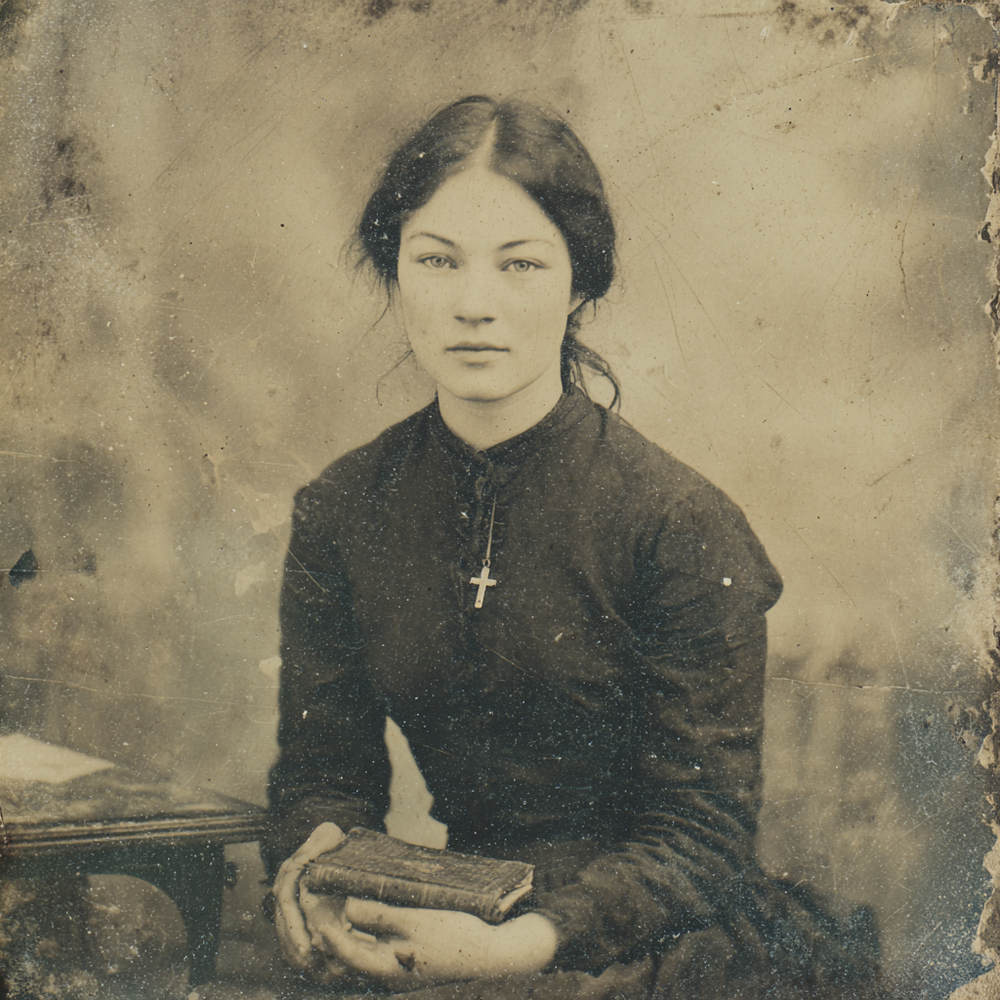

EXPEDITION FILE · DOSSIER № 03Presbyterian Church in Canada · NCULSSEPTEMBER MCMXXIII

Peking · 1923 MISSION № 087
Investigator · Outsider · Missionary & Nurse
MarieHalvorBoucher
包素恬Pao Su-t'ien
Registered Nurse, Vancouver General · Student Missionary, Presbyterian Church in Canada North China Union Language School · Designated marksman, expedition party
Carved Cross
— from Halvor —
Q. What is the chief end of man?
Man's chief end is to glorify God,
and to enjoy him forever.
Westminster Shorter Catechism · Q. 1
Identity Particulars
Given NameMarie For the Virgin · the name the old women in the family would recognize
Middle NameHalvor Her father's given name — not Halvorsdatter, just Halvor
SurnameBoucher Red River Métis lineage · Batoche connections · French butcher, fur-trade ancestor
Chinese NamePao Su-t'ien 包素恬Wrapped in simple tranquility — chosen by her Chinese teacher
Age26 b. 1897 · youngest of eight
Pronounsshe · her
BirthplaceVancouver British Columbia · Canada
ResidencePeking North China Union Language School, women's residence, 2nd floor
OccupationMissionary & Nurse Outsider archetype · in her language year
HeritageNorwegian · Métis Father Norwegian immigrant · mother Métis-Presbyterian
FaithPresbyterian Plain Métis-Prairies faith · Social Gospel sensibility
Credit Rating12 — Poor A nurse on a mission stipend
Mission & school communityMiss Boucher · Marie, once friendly
Chinese friendsPao Su-t'ien 包素恬
Family at homeMarie · Manou · Maya — childhood diminutives from Rose
Her father, rare momentsHalvor-datter— the closest he comes to an endearment
Her mother, intimatenitānis(my daughter) · sākihitowin(beloved one) — Marie understands; does not speak back
Thérèse, in lettersMarie-ma-soeur — a family joke
Characteristics Constitution
STRStrength45half · 22 / fifth · 9
CONConstitution50half · 25 / fifth · 10
SIZSize50half · 25 / fifth · 10
DEXDexterity60half · 30 / fifth · 12
APPAppearance60half · 30 / fifth · 12
INTIntelligence70half · 35 / fifth · 14
POWPower60half · 30 / fifth · 12
EDUEducation55half · 27 / fifth · 11
Hit Points
20 / 20
Magic Points
12 / 12
Sanity
60 / 99
Luck
70
Damage Bonus
0 · Build 0
Talents Gifts
Psychic Power · Clairvoyance
The ability to occasionally perceive things beyond the ordinary. She interprets this as divine revelation — gifts of the Holy Spirit, in Presbyterian terms. She does not doubt her gift. She experiences it as God's occasional direct communication. Each accurate premonition strengthens her faith.
Beady Eye
Suffers no penalty die when aiming at a small target (Build −2); may also fire into melee without a penalty die. The talent of a hunter trained properly by a father who respected the animal and the shot. Halvor taught his daughter to aim, not to spray.
Skills of Standing Competencies
Clairvoyance70
First Aid60
Medicine50
Persuade50
Charm50
Swim60
History40
Track35
Animal Handling30
Ride30
Science (Biology)30
Credit Rating12
All other skills remain at base value. Cthulhu Mythos: 0 — her cosmology has room for what cannot be measured. It does not yet have room for what should not be named.
Carried weapons: .22 Bolt-Action Rifle (her father's teaching rifle, now hers) · Medium carving knife.
Field Assessment, 3 September 1923. Marksmanship trial with Subedar Bajwa at the university range. She checked the chamber before doing anything else — the motion automatic, before thought. First shot two inches left of center at 25 metres. By the fourth she had stopped thinking about it, which is when she started shooting the way she actually shoots. Singh has acquired her a Lee-Enfield .303 through a retired Legation guard for the expedition; he will give it to her formally before departure.
Languages Tongues
English (Own)85Native tongue. Vancouver-Canadian — clean, plain, the English of the Pacific coast.
French français (Canadien)55From her Métis family and her schooling. Not Parisian — the Métis French of the Boucher household, with prairie-fur-trade rhythms.
Mandarin 普通話41Six months in at the North China Union Language School. Her multilingual childhood gave her a good ear; she is progressing faster than many of her classmates. Doing things with her hands helps it come more naturally — the vegetable sellers do not mind being practiced on.
Norwegian (inherited)—Some, from her father. Table prayers he remembered from his childhood, usually on Christmas Eve. Glade jul, hellige jul. Words the boys carried with them to Passchendaele.
Cree & Michif (inherited)—Fragmentary, from her kokum. Kitchen-table Cree — endearments, foods, weather, the names of things her grandmother handled. She understands more than she speaks. She does not speak it back to her mother. Her grandmother's last words were in Cree.
Lineage & Formation Inheritance
Born 1897 in Vancouver — the youngest of eight, the late-life gift. Her father Halvor, a young Norwegian immigrant working in one of Vancouver's rough Pacific trades, met her mother Rose Boucher — Métis-Presbyterian, Red River lineage with Batoche connections — somewhere their working communities overlapped. When Halvor's Lutheran pastor refused to marry them on denominational grounds (the woman was also Métis; the language used would have been half-breed, or country-born), Halvor walked out. He took Rose's surname at marriage — radical for a Norwegian man in 1890s Canada. He was burning the ships. He was telling her Métis family: I am crossing to your side entirely.
Marie's middle name is Halvor — not Halvorsdatter. Norwegian tradition would have given her the patronymic suffix; her father, having given up the tradition, gave his daughter his name itself. Not Halvor's daughter. Just Halvor. I am the father you have.
The household ran on her mother's plain Métis-Prairies Presbyterianism — prayers, hymns, the Sunday school. Her father did not pray aloud but removed his cap and bowed his head; he taught his children Norwegian table prayers and Glade jul, hellige jul. He dropped them at church on Sundays and went to work on his boat or his garden. Her grandmother lived with them in her last years, spoke Cree and Michif and some English, made bannock and pemmican. Marie learned kitchen-table Cree from her kokum. When her grandmother died Marie was ten or twelve; she was buried from the Presbyterian church, but old Métis relatives came up from the prairies and there was a wake that was not quite Protestant. Her father stood at the wake and washed dishes. He understood that his presence was the point.
Edvard and Knut. Two of her older brothers — Halvor gave both his sons Norwegian first names — enlisted with the 29th Battalion (Vancouver's). They went together, fought together, died within weeks of each other at Passchendaele in autumn 1917. The double telegram. The telegram boy was fifteen years old and was crying. Marie was twenty. She applied to the Vancouver General Hospital nursing program within six months. She would learn how to save lives, since her brothers' had not been saved. She has never said this aloud. Knut taught her to shoot when she was eleven — lying flat in a field outside the city, October grass cold and wet, tin cans on a fence post. She was better than him within a month.
The uncle who did not return. Her mother's younger brother, Marie's uncle Jean-Baptiste, was taken to a Presbyterian residential school in the 1890s and did not come back. The school wrote that he had died — tuberculosis, or influenza, or complications. The family was not invited to the burial; they did not see where his grave was. Her grandmother's last words asked whether Jean-Baptiste had been brought home. Marie has been sent by the Presbyterian Church in Canada to evangelize in China while carrying in her family's memory a boy the Presbyterian Church in Canada took away and did not return. She has made a private vow, articulated to herself only once, on the ship crossing the Pacific: I will not be what they were.
Vancouver General nursing diploma 1921. Theological training at Ewart College or Westminster Hall. She sailed from Pier D on a CPR Empress steamship in the summer of 1923 — weeks after Canada passed the Chinese Immigration Act, banning Chinese immigration for twenty-four years. Chinese Canadians called 1 July Humiliation Day. She is going to China in part because her country has slammed its door, and she intends to be a bridge where her government wants a wall. Her plan: five to ten years in China, then return to Vancouver to work with Chinese Canadian communities on Pender Street — not as a missionary to them in the condescending sense, but as a bridge, an advocate, a medical worker.
Her Chinese name 包素恬 was suggested by her Chinese Presbyterian teacher in her first weeks in Peking: 包 (Pao) for the soft opening syllables of Boucher; 素 for simple, plain, unadorned; 恬 for tranquil, calm. Wrapped in simple tranquility. She accepted it gratefully.
The Party Fellow travellers
Subedar Gurdit Singh Bajwa Director of Expedition Security · Amritsar · the relationship to watchBoth carry empire's wounds. The Komagata Maru happened in her country when she was seventeen; her father had strong opinions about it at the time, opinions she is proud of in retrospect. The name Gurdit Singh — she will know who else carries it. He will know she knows. At their second meeting she asks him whether he would prefer to take his meals separately during the expedition — a quietly informed question showing she has thought about halal restrictions. He tells her he appreciates the question. They nod at each other. Something has been established. They recognize each other's silences.
Hélène Éloïse Bergeron Sociolinguist · 貝樂然 · Burgundy → Paris → PekingA surprising depth of connection. Both women on unconventional paths; both serious. Hélène is fascinated by Marie's Michif heritage; Marie is fascinated by Hélène's linguistic work on Chinese religious vocabulary. Their conversations about the Chinese Union Version Bible — Logos → 道, Grace → 恩, Redemption → 救贖 — could be extraordinary. The first intact living faith Hélène has studied up close that does not flinch from her.
Ch'ien Po-hsiang Michel · husband to Hélène · paleobotanistMutual respect, careful navigation. He knows what missionaries can be. She knows he knows. They may bond over their shared sense of being serious people in a not-very-serious world.
Anna Wolf, R.N. Peking Union Medical College · German-American nurse-administrator of the old schoolAssembled the expedition medical kit before Marie could speak. Brisk, capable, constitutionally unable to believe anyone else has thought as carefully about a problem as she has. Made some substitutions.
Rev. Dean Calder Presbyterian Church in Canada · Interior MissionSigned her leave-of-absence paperwork and delivered a confidential list of fourteen contact names — Rev. Forsythe at Lanzhou, Miss Kwan the itinerant nurse, Rev. Hovsepian the Armenian Evangelical at Hami, and so on. The Dunhuang entry is the only one marked uncertain: changed since last report. She does not know when the last report was. She does not know what has changed.
Phyllis Joan Weatherby Roommate · NCULS · Victoria via MelbourneTwenty-four, pink-cheeked, Methodist mission training, the particular cheerfulness that is entirely genuine and occasionally exhausting. Took the news of Marie's departure honestly; agreed without hesitation to take over Wednesday gardening with Mrs. Huang; will post Marie's letters to Thérèse and to her mother on the eighth.
Halvor Boucher Vancouver · her father · Norwegian, took her mother's surnameCame to see her off at the CPR pier. Did not speak much. Gave her a small wooden cross he had carved himself; he had been working on it for months. She keeps it in her Bible. Halvor-datter, he said, the closest he comes to an endearment.
Rose Boucher Vancouver · her mother · Métis-Presbyterian, the religious life of the homeKissed her daughter at the pier. Did not weep until the Empress of Russia was out of sight. Marie writes home weekly — long newsy letters about Chinese food and Peking streets; rarely anything difficult. Rose does not need more difficulty.
Thérèse "Terry" Boucher Vancouver · her sister · schoolteacher · proudest of the Métis sideTheir letters are the real letters — honest, sharp, sisterly. Reading about Riel and the Resistance; writes Marie letters full of politics. Marie-ma-soeur, a family joke.
Field Equipment What she carries
Medical Kit — Three crates, ~35 lbs PUMC allocation, Anna Wolf, R.N.
Surgical dressings, assorted generous — Anna's word, which means excessive
Catgut suture, three weights; curved and straight needles
Chloroform, 500ml (one bottle) More than this I cannot justify
Carbolic acid solution for sterilization
Tourniquets, field pattern, ×2
Bone saw You may not need it. You will want it if you do.
Quinine tablets, 200 malaria prophylaxis and treatment
Calomel — purgative, general GI use
Laudanum, 2oz Anna declined the requested morphine on allocation grounds
Ipecac syrup; castor oil; bicarbonate of soda, 1lb
Petroleum jelly, large tin frostbite prevention
Wool bandaging; hand warmers, chemical, ×6 The Gansu corridor in October. You will thank me.
Her Bible with Halvor's carved wooden cross inside
Stethoscope, in the inner pocket of her medical bag
Calder's confidential contact list 14 names · Lanzhou, Anxi, Hami, Lhasa · folded beside the stethoscope
The expedition briefing, 31 pages
Letters from Thérèse and her mother, replies-in-progress
.22 Bolt-Action Rifle her father's teaching rifle
Medium carving knife
Lee-Enfield .303 to be issued by Subedar Bajwa before departure
Padded jacket; sensible shoes; the unspoken inventory of a woman who has packed for an October desert
Field Journal Notes from the road
3 September 1923 — MorningHutong behind the Language School · the breakfast stalls
Returning from the morning market with a cloth bag of autumn vegetables. Doing something with her hands helps her Mandarin come more naturally; the vegetable sellers do not mind being practiced on. She tells Phyllis she is leaving the school for a four-month expedition west. She walks out of the school gate; her breath shows in the cold air.
3 September 1923 — MorningPeking Union Medical College · supply room
Anna Wolf has the three crates already stacked and labeled. "I made some substitutions," she says, before Marie can speak. On the tram ride after, Marie reviews the kit. She does not know about kala-azar. She does not know about sha fei, sand lung. She does not know that the wells between Anxi and Dunhuang are alkaline this year. Medicine roll · 94 · Failure.The kit looks complete to her.
3 September 1923 — 3:00 P.M.Wang Enlai's Meeting Room · the corridor outside, three crates
She arrives ten minutes early with the crates on a borrowed handcart. Inside, the three others are already seated — the large turbaned man at the end of the table looks at her with the measuring attention of a man doing a professional assessment, and finds the subject not what he expected. Wang asks if she has reviewed the contents. "審查過了. 物資很充足." — I have. The supplies are adequate. She says it with confidence, because to her eyes they are.
3 September 1923 — Late afternoonThe Range · behind the groundskeeping buildings
Subedar Bajwa offers her a Winchester Model 1906 .22, presented horizontally on his forearms — the way one presents a weapon to someone who knows what a weapon is. She checks the chamber before anything else; the motion is automatic, before thought. First shot two inches left of center at 25 metres. By the fourth she has stopped thinking. The seventh — she shifts to the 50-metre frame without being asked, takes the shot from uneven ground, and lands within an inch of center. Firearms (Rifle) roll · 61 · Regular success.
Calder's confidential contact list arrives by mission errand-boy: fourteen names, Lanzhou south and west to Lhasa, the network thinning as the distances grow. Forsythe at Lanzhou is reliable. Hovsepian at Hami speaks Uyghur, Turkish, some Mandarin. Lhasa — do not attempt without prior authorization. She notes, without knowing yet why, that the Dunhuang entry is the only one marked uncertain. Changed since last report. She folds the list into the inner pocket of her medical bag, beside her stethoscope.
5 September 1923 — EveningHer room · the desk Phyllis cleared so she could pack
Writes Thérèse's letter in one sitting. Six pages, which is normal for Thérèse. Describes Gurdit as formidable and precise, Hélène as the smartest person in any room she enters, Chih-yüan as a man who notices everything and says half of it. Mother's letter takes three drafts; she finds the register she is looking for — the particular tone of a woman speaking to her mother from inside her own faith. She tells her mother she is going where she is needed. She does not tell her about the letters written in a language she cannot yet read, the three blank coordinates, the site with no name and an uncertain affiliation.
7 September 1923 — MorningHôtel des Wagons-Lits · Legation Quarter
Meeting with Warner. Her hands are folded in her lap. She says nothing. Her face says nothing that she has not chosen. When Chih-yüan tells Warner about Pelliot's looting, the facts editorialize themselves, and she lets them.
October 1923Mogao Caves · arrival
The valley announces itself before the caves do — a fold in the desert, trees stripped bare, ravens in every branch. The old Daoist priest meets them. The party is shown into a painted ground-level cave for their quarters; the eyes of the donor figures follow them as they move through the space. Whatever you need, come to me. Not him.
The cold before the lightThe base of the cliff · before dawn
She is already outside when the sky begins to pale, breath misting, the Lee-Enfield broken down on its cloth on a flat rock. Gurdit emerges a few minutes later with two cups of tea and sets one beside her without comment. The ravens watch from the trees.